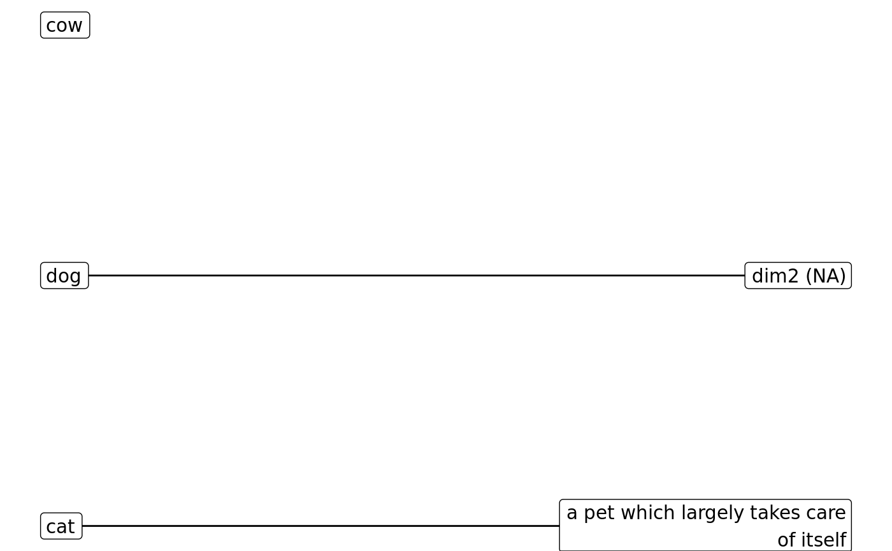
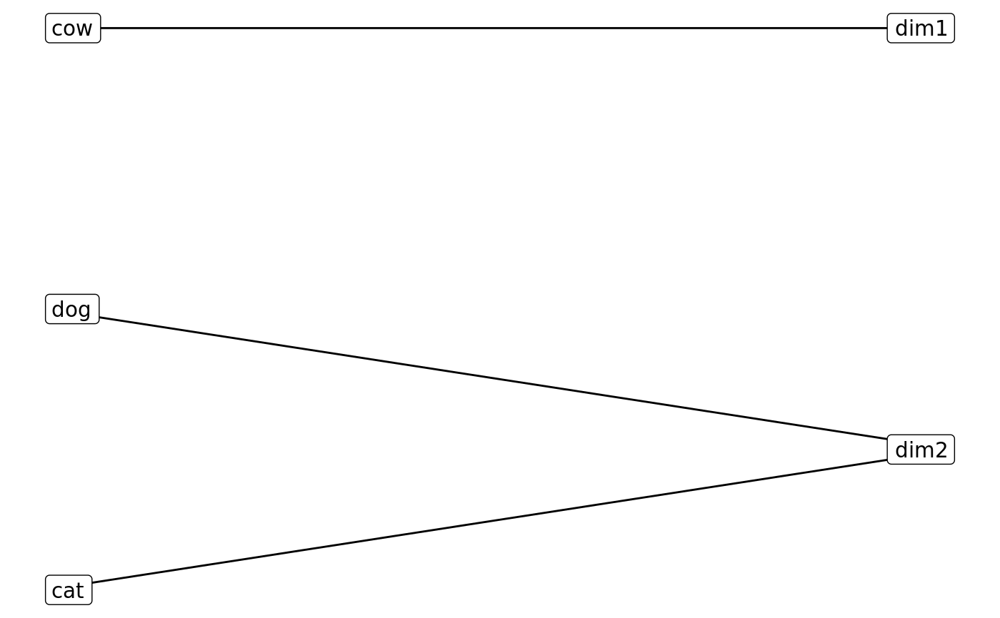
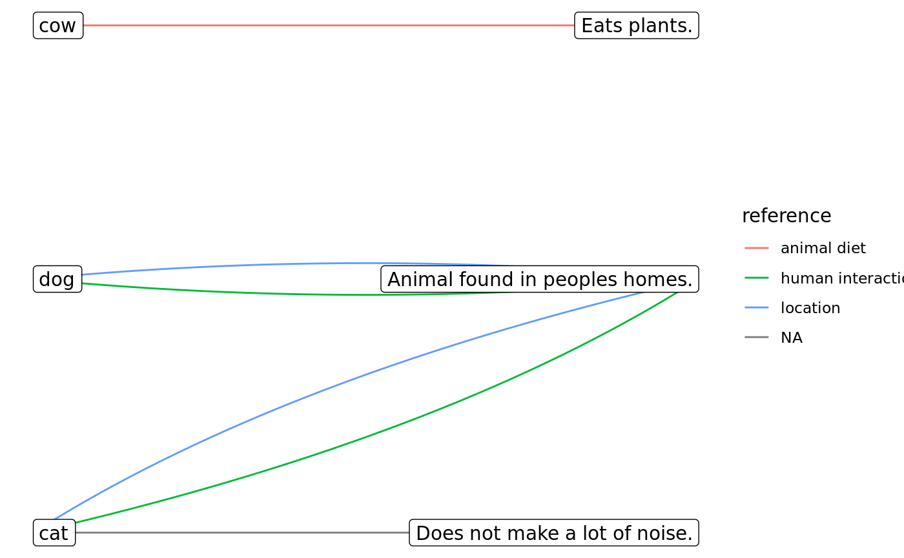

R/psOpenSort.R
psOpenSort.RdConstructs S3 class for pensieve.
psOpenSort(osort, descriptions = NULL, scale = NULL) as_psOpenSort(osort, descriptions = NULL, scale = NULL) # S3 method for matrix as_psOpenSort(osort, descriptions = NULL, scale = NULL) # S3 method for data.frame as_psOpenSort(osort, descriptions = NULL, scale = NULL) # S3 method for psLogicalOpenSort tidy(x) # S3 method for psLogicalOpenSort autoplot(object, edge_codings = NULL, str_wrap_width = 30) # S3 method for psLogicalOpenSort summary(object, ...)
| osort | a matrix with items as rows, open dimensions as columns, and open sort value in cells. If rows are named (by item handles), names must be valid R names. If columns are named, they must be valid R names and they must be the same as the names in |
|---|---|
| descriptions | a character vector giving the open-ended dimension description provided by the participant.
If elements are named, names must be valid R names.
Defaults to |
| scale | a charater string giving the scale of the open sorts, must be one of:
Defaults to Currently only |
| x | a psLogicalOpenSort, created by |
| object | a psLogicalOpenSort, created by |
| edge_codings | a tibble with category description indeces in the first column, and arbitrary metadata about the descriptions in limited later columns:
|
| str_wrap_width | integer scalar, giving the maximum number of characters after which to insert a newline, passed on to |
| ... | further arguments passed to methods. |
Object of class psOpenSort.
as_psOpenSort: coerce matrix to psOpenSort
as_psOpenSort: coerce data.frame to psOpenSort
tidy: Prepare individual open sort for bipartite plotting.
autoplot: Create bipartite plot from individual open sort.
summary: Summarise an individual open sort.
To render the resulting ggplot object, you must manually call library(ggraph) somewhere in your script (as per this limitation).
If codings are added, the aesthetics are set for each individual psOpenSort separately, which may make it hard to compare plots across participants.
To get consistent code aesthetics, consider applying ggraph::scale_edge_color_manual() and friends.
Other S3 classes from pensieve:
correlate(),
extract(),
psClosedSorts(),
psGrid(),
psItemContent(),
psOpenSorts(),
psPeople(),
score()
# create single open sort ==== # Lisas open sort, unnamed descriptions (matched by index) losort <- matrix( data = c(TRUE, FALSE, FALSE, FALSE, TRUE, FALSE), nrow = 3, dimnames = list(items = c("cat", "dog", "cow"))) descriptions <- c( "a pet which largely takes care of itself", NA # dimension is assigned, but not described (not a problem) ) lisa <- psOpenSort(osort = losort, descriptions = descriptions) # Peters open sort, named descriptions (*also* only matched by index) losort <- matrix( data = c(TRUE, TRUE, FALSE, TRUE, FALSE, FALSE, FALSE, FALSE, TRUE), nrow = 3, dimnames = list( items = c("cat", "dog", "cow"), categories = c("in_homes", "quiet", "herbivore") )) descriptions <- c( in_homes = "Animal found in peoples homes.", quiet = "Does not make a lot of noise.", herbivore = "Eats plants.") # defined, but never TRUE (not a problem) peter <- psOpenSort(osort = losort, descriptions = descriptions) # coercion methods peter_m <- as_psOpenSort(osort = as.matrix(x = losort), descriptions = descriptions) peter_df <- as_psOpenSort(osort = as.data.frame(x = losort), descriptions = descriptions) # Rebeccas open sort, without any descriptions provided losort <- matrix( data = c(FALSE, FALSE, TRUE, TRUE, TRUE, FALSE), nrow = 3, dimnames = list(handles = c("cat", "dog", "cow"))) rebecca <- psOpenSort(osort = losort, descriptions = NULL) # Ira open sort, with some problems losort <- matrix( data = c( FALSE, FALSE, FALSE, # this is dropped, b/c there is just no valuable information here, TRUE, TRUE, TRUE, # same problem; no variance FALSE, FALSE, FALSE, # also no variance, but there *is* a corresponding description, # so we're setting column to NA and keeping the description NA, TRUE, FALSE), # you can also have *actual* NAs nrow = 3, byrow = FALSE, dimnames = list(handles = c("cat", "dog", "cow")) ) descriptions <- c(NA, NA, "mammals", NA) ira <- suppressWarnings(as_psOpenSort(osort = losort, descriptions = descriptions)) # this gives appropriate warning messages # psOpenSort() would error out; only coercion method will attempt fix # ordinally and intervally scaled sorts are also possible, but currently unsupported tyler <- matrix( data = as.integer(c(1, 2, 2, 1)), nrow = 2, ) tyler <- psOpenSort( osort = tyler, scale = "ordinal") # defaults to implicit class of base type roberta <- matrix( data = c(2.2, 4.3, -2.8, 0), nrow = 2 ) roberta <- psOpenSort(osort = roberta) # plotting ==== library(ggraph) # must be attached while running below#># no with codes petercodes <- tibble::tibble(category = c("in_homes", "in_homes", "quiet", "herbivore"), reference = c("location", "human interaction", NA, "animal diet"), length = c("medium", "medium", "medium", "short") # notice the duplicates to allow for multiple codes ) ggplot2::autoplot(object = peter, edge_codings = petercodes)summary(peter)#> $n_dim #> [1] 3 #> #> $n_true #> [1] 4 #> #> $true_per_dim #> [1] 1.333333 #> #> $n_true_by_item #> cat dog cow #> 2 1 1 #> #> $n_true_by_dim #> in_homes quiet herbivore #> 2 1 1 #>